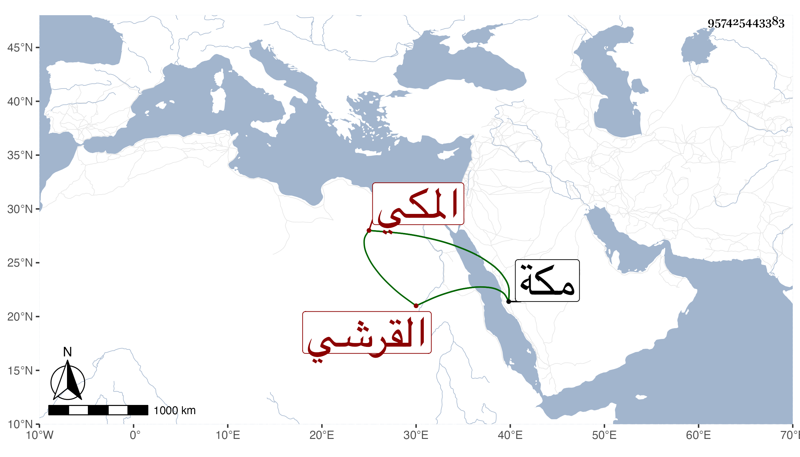

0902Sakhawi.DawLamic.ITO20230111-ara1.EIS1600.957425443383
Biography ID: 957425443383
420
محمد بن أبي بكر بن عبد الله بن ظهيرة بن أحمد عطية بن ظهيرة أبو سعيد القرشي المكي ويعرف كسلفه بابن ظهيرة ، وأمه عائشة ابنة أحمد بن محمد بن أحمد بن عبد المعطي الأنصاري . ولد بمكة ونشأ بها وسمع بها من عمه الجمال ابن ظهيرة وأجاز له في سنة خمس وتسعين ابن صديق وابن فرحون والمراغي والشهاب أحمد بن علي الحسيني وابنا ابن عبد الهادي وابنة ابن المنجا والعراقي والهيثمي وابن الكويك وآخرون . ومات سنة خمس عشرة بزبد ووصل نعيه لمكة في رمضان .
